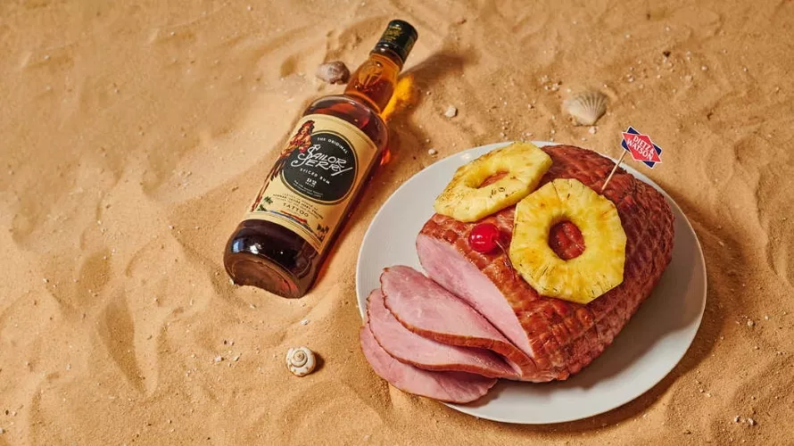

Rum Ham

Description
It's summer, it's hot and you are at the beach. You and your friend find an inflatable boat and decide to take a journey in the open sea. But something is missing! What is missing?
I can tell you right now, that the thing you are missing is RUM HAM
The only thing that makes boat journeys tolerable. So I will tell you how to make Rum Ham so that you and your friend are not alone on this exploratory journey.
Enjoy!
Ingredients
- 1 Dietz & Watson Tiffany Dinner Ham
- 3 ½ parts of Sailor Jerry Spiced Rum
- 1 part pineapple juice
- 1 part light brown sugar
- ¼ parts salt
- 1 tsp whole peppercorns
- 3-5 parts water
- Pineapple slices and maraschino cherry for garnish
Steps
- Add 3 parts of Sailor Jerry Spiced Rum & pineapple juice to a large stockpot.
- Add peppercorns and cloves.
- Bring to a boil. Let boil for 3-5 minutes. Reduce heat to a simmer.
- Add brown sugar and salt. Whisk until sugar is dissolved.
- Add ham to the pot and add enough water to cover the ham. Let simmer for 25 minutes or until ham is warmed through. Turn off heat.
- Add remaining ½ part of Sailor Jerry Spiced Rum and let sit in liquid for 10 additional minutes.
- Remove ham from pot, top with pineapple slices and cherry and serve. Use reserved liquid to pour on top of slices.
Back to main page